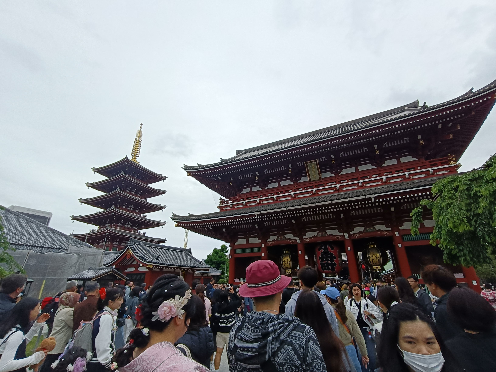
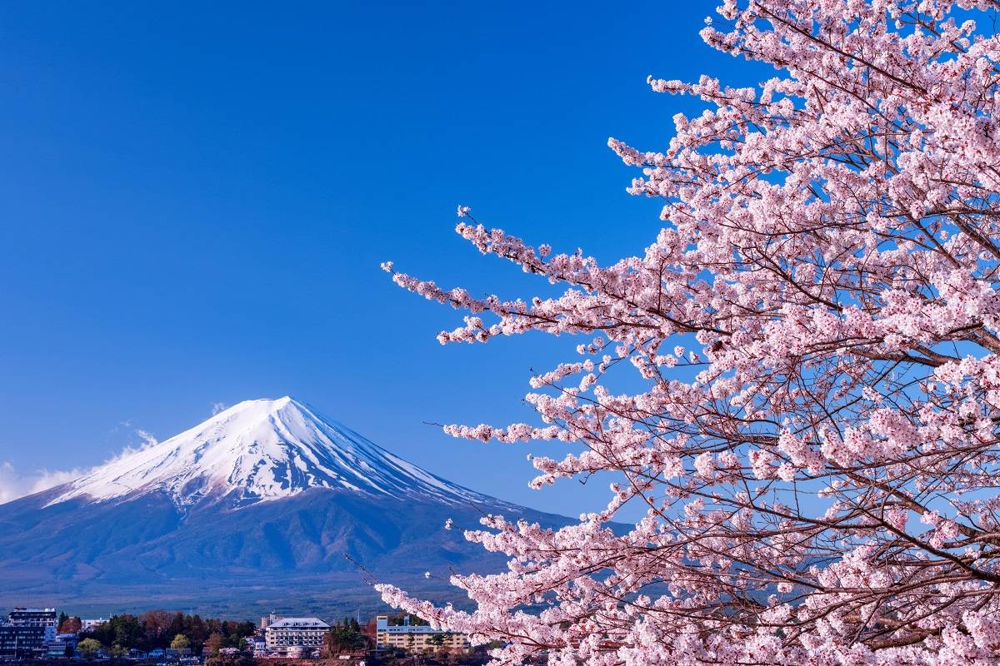
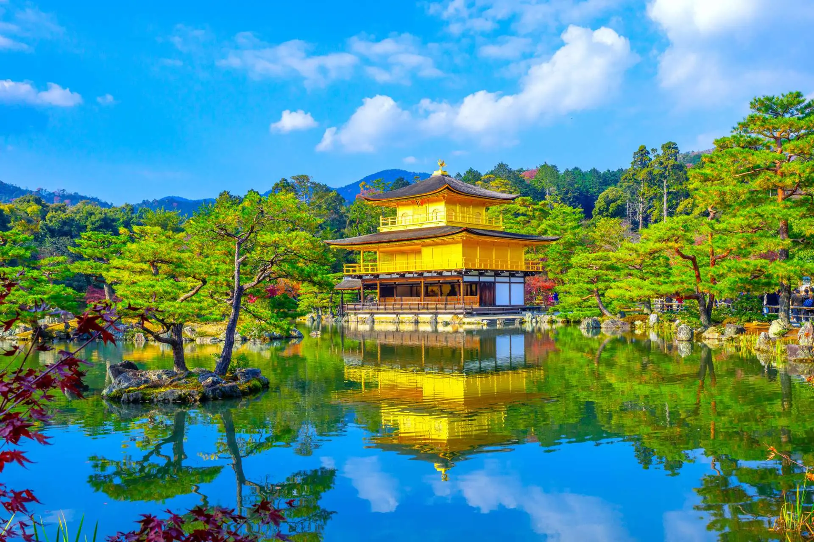
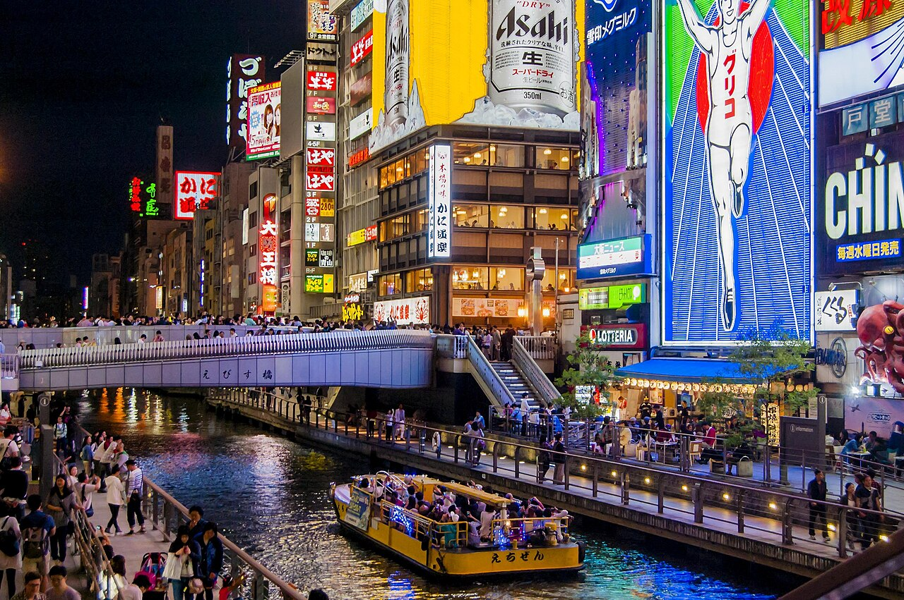
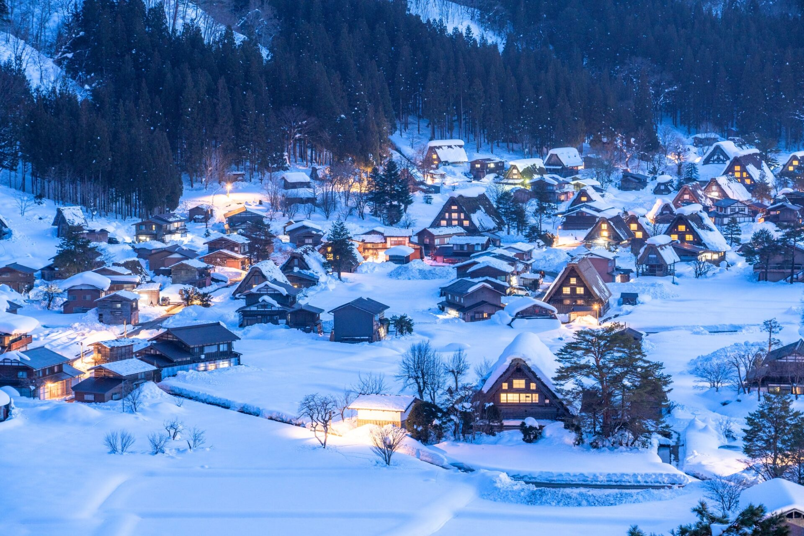
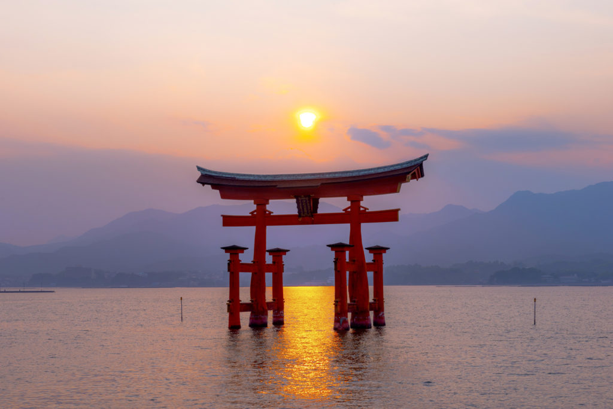

観光名所マップ
おすすめスポット一覧

浅草寺
都内で最も古い寺院。雷門の大きな赤提灯が目印で、多くの参拝客で賑わう。

富士山
日本一の高さを誇る名峰。四季折々の美しい雪景色が世界中で親しまれる。

金閣寺（鹿苑寺）
黄金色に輝く舎利殿が水面に映える京都の名所。優雅な日本庭園が広がる。

道頓堀
巨大な看板が立ち並ぶ大阪の繁華街。たこ焼きなど大阪グルメを楽しめる。

白川郷 合掌造り集落
かやぶき屋根の伝統的な家屋が残る集落。冬の幻想的な雪景色が有名。

厳島神社
海の上に建つ社殿と大鳥居が印象的な名社。潮の満ち引きで表情が変わる。